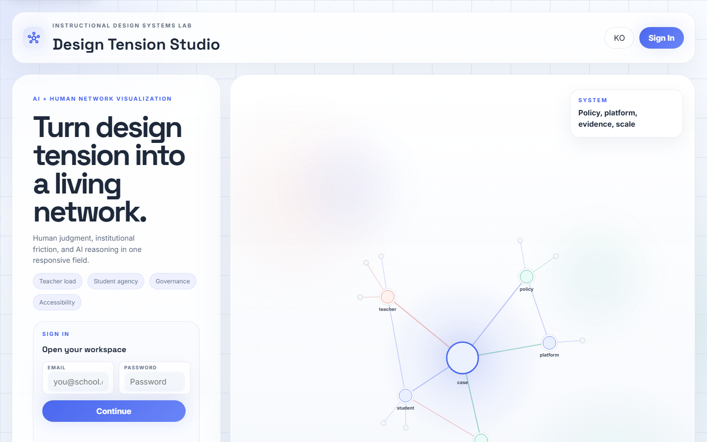
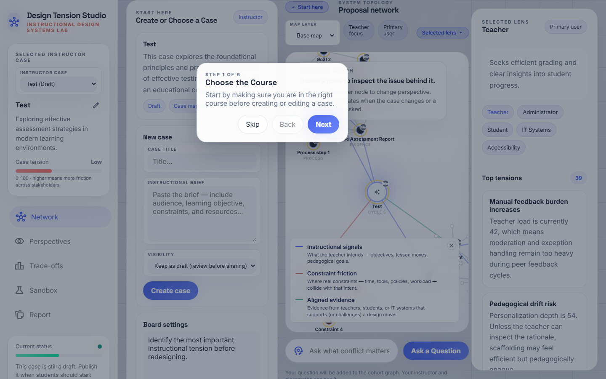
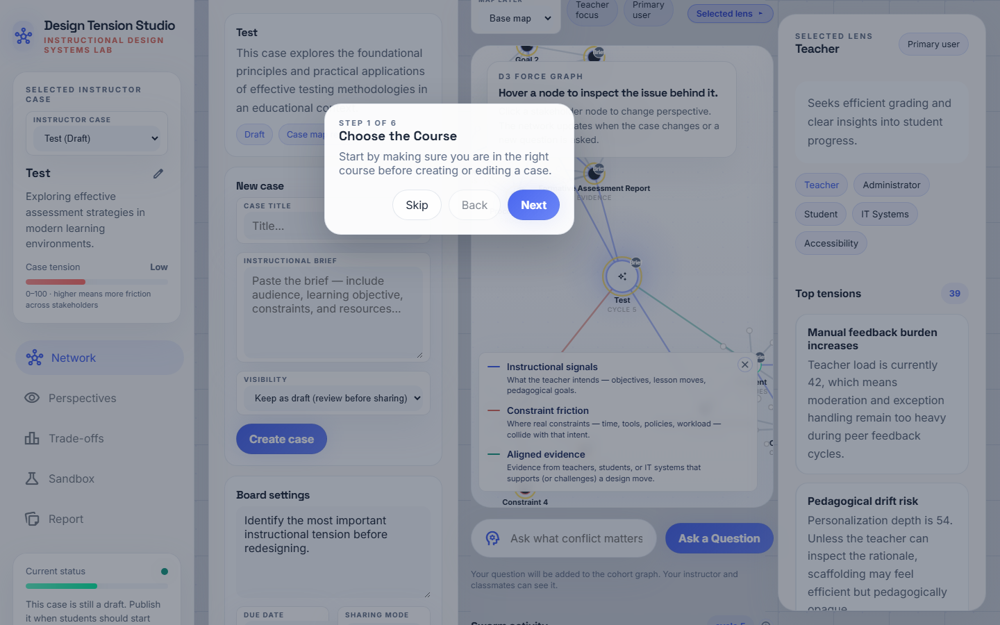
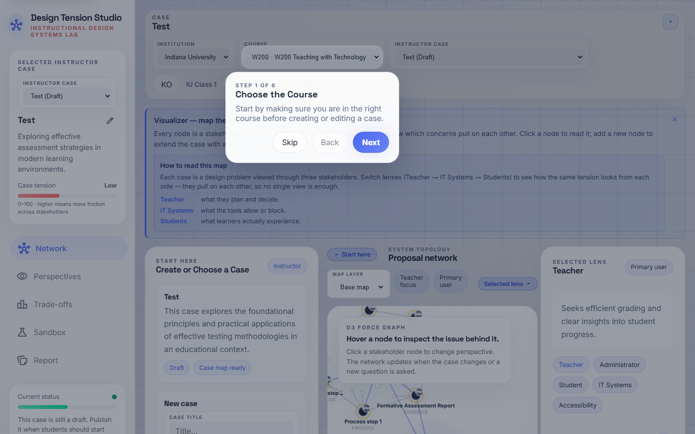

수업용 Swarm_ID 준비를 위한 단계별 안내서입니다. 각 스텝은 무엇이 보이는지, 어디를 클릭하는지, 그리고 시스템이 어떤 일을 하고 있는지를 함께 설명합니다.
Swarm_ID가 다른 이유. 학생이 질문하면 Swarm_ID는 LLM을
한 번만 호출하지 않습니다. 대신 스웜 라운드를 실행합니다 —
다섯 명의 이해관계자 에이전트(교사·학생·IT·행정·접근성)가
같은 질문에 동시에 답합니다. 두 번째 패스는 답변 쌍을
동의 / 이견 / 부분일치로 분류해 네트워크 위에 그려 줍니다.
학생은 다원성·충돌·합의 지점을 한눈에 보고, 특정 관점에 대해
"Challenge"를 누르면 해당 에이전트가 2라운드 응답으로 정교화
합니다. 맵의 모든 주요 노드에는 출처 배지(AI,나,동료,
설명)가 달려 있어 누가 쓴 내용인지 항상 추적 가능합니다.
Step 1 · 로그인

https://swarmid.vercel.app 에 접속해 강사 계정으로 로그인합니다 (Supabase 기반). 아직 계정이 없다면 플랫폼 관리자에게 요청하세요 — 강의 데이터를 기관 내부에 보호하기 위해 자가 가입은 의도적으로 비활성화되어 있습니다.
내부 동작: Supabase에 인증한 뒤 기관·강의 컨텍스트를 불러옵니다. 최근 케이스, 튜토리얼 진행 상태 등 로컬 캐시도 localStorage에서 복원됩니다.
Step 2 · 스튜디오 진입
스튜디오의 케이스 네트워크 뷰로 진입합니다. 왼쪽 사이드바에는 네비게이션(네트워크 · 관점 · 트레이드오프 · 샌드박스 · 리포트)과 현재 상태 건강 패널이 있습니다. 중앙 캔버스에 D3 힘 지향 그래프, 오른쪽 사이드바에는 선택된 렌즈와 스웜 활동 피드가 표시됩니다.
팁. "스웜 활동" 옆 알약 라벨은 이제 사이클 N · 라운드 M 으로 표시됩니다. 사이클은 그래프 리렌더 횟수, 라운드는 실제 다중 에이전트 턴 수를 셉니다. 수업이 끝난 뒤 라운드가 충분히 0보다 커야 학생들이 스웜에 실제로 참여했다는 증거가 됩니다.
Step 3 · 케이스 라이브러리 점검

시작하기(인테이크) 패널을 스크롤해 강의 케이스 목록을 확인하세요. 카드마다 제목·요약·초안/게시 상태·열기/게시 버튼이 보입니다. 게시됨이 붙은 카드는 학생에게 노출되고, 초안 카드는 강사 전용입니다.
관리 팁. 학생이 케이스를 못 찾는 가장 흔한 원인은 초안 상태로 남아 있기 때문입니다. 카드의 게시 버튼을 한 번 누르면 해결됩니다.
Step 4 · 케이스 열기
수업에 사용할 케이스(예: 5학년 온라인 디지털 리터러시 모듈)의 케이스 열기 버튼을 누르면 캔버스가 재렌더됩니다:
- 케이스 제목을 담은 중앙 코어 노드
- 코어를 둘러싼 이해관계자 노드(교사·학생·IT·행정·접근성)
- 각 이해관계자에 연결된 시그널 노드(목표·제약·증거)
모든 주요 노드에는 오른쪽 위에 작은 출처 배지가 붙습니다 — 설명이면 업로드된 수업 설명요약에서 나온 노드라는 뜻입니다.
Step 5 · 새 설명요약 업로드 / 구조화

이번 수업에 새 케이스가 필요하면, 인테이크 패널의 수업 설명요약을 붙여 넣으세요 텍스트 영역에 설명요약을 넣고 케이스 구조화를 누르세요. 시스템이 Gemini를 호출해 목표· 제약·이해관계자·시드 증거를 추출하고 케이스 레코드에 넣은 뒤 목록에 초안으로 올려 둡니다.
교수학습 팁. 설명요약 품질이 곧 스웜 품질입니다. 다음을 포함 하세요: 대상 학습자, 학습 목표(ADDIE / 5E 친화적 언어), 제약(시간· 도구·정책·워크로드), 최소 한 가지 긴장 지점(예: "저작 정책 vs AI 보조 드래프팅"). 긴장이 많이 인코딩될수록 스웜이 그리는 이견 엣지가 더 풍부해집니다.
Step 6 · 보드 설정

설정을 열어 코호트 보드를 구성하세요. 핵심 노브:
- 학습자 노드 최대 개수 — 학생 한 명이 개인 맵에 추가할 수
있는 아젠다 노드 수 상한.
- 노드당 AI 확장 최대 개수 — Gemini가 특정 학생 노드 아래에
자동 생성할 후속 개수 상한.
- 거버넌스 게이트 / 접근성 게이트 — 학습자가 결정을 게시
하기 전 리뷰 게이트 설정(선택).
기본값은 30명 섹션에 안전합니다. 더 짧고 신중한 수업을 원하면 값을 낮추세요.
Step 7 · 관점 (Perspectives)

왼쪽 내비게이션의 관점을 클릭합니다. 이해관계자별 상위 충돌 요약과 정량적 긴장 점수가 표시됩니다. 학생이 스스로 스웜 라운드를 돌리기 전에, 강의에서 "각 렌즈가 지금 무엇을 걱정하는가"를 짚기 좋은 뷰입니다.
교실용 발문 예: "교사 점수가 74이고 학생 점수가 58이라면, 지금 어느 이해관계자가 더 부담을 짊어지고 있고, 왜 제약이 그렇게 만들었을까?"
Step 8 · 트레이드오프

트레이드오프 뷰는 레이더(개인화 / 프라이버시 / 접근성 / 실현가능성 / 교사 여유)와 바 차트를 보여 줍니다. 매트릭스 상태 라벨은 주의 필요, 경계, 균형 중 하나를 표기합니다.
활동 단계 사이의 체크포인트로 활용하세요. "지금 어디서 충돌이 튀어 오르는가?"는 코호트 전체용 메타인지 프롬프트로 좋습니다.
Step 9 · 샌드박스

샌드박스에서는 사전 정의된 시나리오(예산 · 접근성 · 워크로드) 를 적용해 지표가 어떻게 재분배되는지 관찰할 수 있습니다. 자율 반복을 켜면 시스템이 안정 상태에 이를 때까지 충돌을 계속 셔플합니다.
"만약에" 연습에 가장 적합한 뷰입니다. 시나리오 적용 → 학생이 긴장이 어디로 이동할지 예측 → 공개 → 토의 순서.
Step 10 · 리포트 & 내보내기

리포트는 결정·증거·메모를 하나의 공유 가능한 요약으로 조립합니다. PNG 다운로드는 슬라이드용 네트워크 이미지, HTML 다운로드는 학생이 간직할 수 있는 독립형 스냅샷을 제공합니다.
수업 후. 스웜 활동을 한번 더 확인하세요 — 라운드 카운터는 코호트가 5-에이전트 스웜에 실제로 개입했는지, 아니면 단순히 브라우징만 했는지 보여 줍니다. 학생 30명이 30라운드 이상 만든 수업은 활발한 참여, 5라운드 정도에 그친 수업은 더 명시적인 프롬프팅이 필요합니다.
문제 해결
| 증상 | 원인 추정 | 조치 |
|---|---|---|
| 학생이 케이스를 못 봄 | 초안 상태 | 카드의 게시 클릭 |
| 질문 후에도 네트워크가 비어 있음 | 학생이 제출 안 함 / Gemini 키 미설정 | Vercel의 /api/gemini 로그 확인 |
| 이견 엣지가 전혀 안 나타남 | 2차 Gemini 패스가 조용히 실패 | 브라우저 콘솔에서 classifySwarmEdges 경고 확인 |
| UI에 한/영이 섞임 | 렌더 도중 로케일 전환 | 로케일 버튼을 두 번 눌러 전체 리렌더 강제 |
| 왼쪽 사이드바 내용 잘림 | 뷰포트 높이 부족 | 사이드바는 독립 스크롤 — 내부 콘텐츠를 드래그 |
수업 직전 프리플라이트
- 사용할 모든 케이스 카드가 게시됨 상태.
- 보드 설정 완료 (50분 수업 기준 학습자 노드 최대 개수 ≥ 6).
- 강사 본인이 수업용 케이스를 최소 한 번은 열어 봄 (캐시 워밍 +
Gemini 쿼터 이슈 선검출).
- 프로젝터/화면 공유 창이 네트워크 뷰를 전폭으로 표시 —
시연 시 두 사이드 패널을 쉐브론으로 접어 맵이 캔버스를 채우게 한다.
- 학생 가이드(
student-en.md/student-ko.md)를 미리 읽어
학생이 보게 될 화면을 정확히 파악해 둔다.